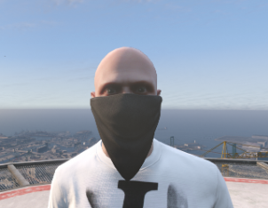
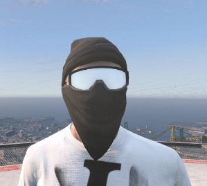
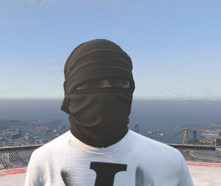

Nordkirchen Regelwerk
§1 Allgemeines
§1.1: Die Serverleitung steht über dem Regelwerk.
§1.2: Achte darauf, dass du einen PC hast, der den Leistungen des Servers standhält.
§1.3: Achte drauf, dass du ein funktionsfähiges Mikrofon, Kopfhörer, Tastatur und Maus zur Verfügung hast.
§1.4: Wenn du unter Drogen-Alkoholeinfluss bist, darf der Discord und der Server nicht betreten werden.
§1.5: Das AFK gehen während einer RP Situation ist nicht gestattet.
§1.6: Das Androhen des Supports/Melden eines Spielers ist nicht gestattet.
§1.7: Um auf dem Server spielen zu können, muss man 14 Jahre alt sein!
§1.8: Multi-Char ist nicht erlaubt!
§1.9: Die Weitergabe des eigenen Accounts ist verboten und wird mit einem Community-Ausschluss bestraft. (Darunter zählt auch andere Personen am eigenen PC spielen zu lassen)
§1.10: RP-Inhalte von anderen Projekten sind hier nicht erwünscht
§1.11: Das private Anschreiben sowie das Pingen (Markieren) von Teamlern ist zu unterlassen, dies führt zu einer Sanktion.
§1.12: Alle hier aufgeführten Regeln sind zu jeder Zeit einzuhalten. Das Ausnutzen von Grauzonen o.ä. wird mit einem Bann sanktioniert.
§2 Allgemeine Regeln im Roleplay
§2.1: Handel Logisch und Realistisch
§2.2: RDM = Das Töten von Spielern ohne Grund ist verboten. (Random Deathmatch)
§2.3: VDM = Das absichtliche Überfahren von Spielern ohne jeglichen RP Hintergrund ist verboten.
§2.4: Fail-RP = Unrealistische Handlungen im RP sind verboten und werden mit einem permanenten Bann bestraft. (mit einem Sportwagen Berge hochfahren, mit 300 Km/H durch die Stadt fahren)
§2.5: Notruf: Der Notruf darf im RP auch ohne jeglichen Grund angerufen werden. Man sollte aber mit den Folgenden Konsequenzen der Polizei rechnen.
§2.6: Cop Baiting: Cop Baiting ist erlaubt, man sollte aber wissen, wann genug ist.
§2.7: Zoll: Der Zoll ist im RP das Server Team, das Ansprechen eines Zöllners ist nicht gestattet und wird mit Konsequenzen bestraft.
§2.8: Das Ausnutzen von Props um Spieler einzusperren ist nicht gestattet. Der Spieler muss eine Möglichkeit haben, um zu entkommen. (Ähnlich "§2.9 Power-RP")
§2.9: Power-RP: Spieler müssen eine Möglichkeit haben, um lebend aus einer RP Situation zu entkommen. (Verboten ist z.B: "Spring von der Brücke oder ich knall dich ab")
§2.10: Nachspielen von Terroranschlägen oder Vergewaltigungen ist streng untersagt und wird mit einem permanenten Community-Ausschluss bestraft.
§2.11: Das Durchsuchen von Personen, die bewusstlos sind, ist ohne RP Hintergrund verboten.
§2.12: Das Vorspielen eines "AFK-Zustandes" ist untersagt.
§2.13: Rassistische Äusserungen/Inhalte sind streng verboten.
§2.14: Stimmenverzerrer sind im RP nicht gestattet. (Ausnahmen können gewährt werden)
§2.15: OOC Talk ist zu vermeiden!
§2.16: Das Handeln mit Ingame-Gütern oder Accounts gegen Echtgeld ist strengstens verboten und wird mit einem permanenten Ausschluss vom Server sanktioniert.
§2.17: Jeder im Roleplay sollte einen realistischen Vor- und Nachnamen haben. Des Weiteren sollte jeder Charakter angemessen gekleidet sein. (Ausnahme Events)
§2.18: Staatsfahrzeuge (NPC,Pol, RD, BF, etc...) dürfen nur mit triftigem RP Hintergrund gestohlen werden. (Fluchtsituationen um sein Leben zu schützen, dazu zählt nicht: "ich brauche ein Auto")
§2.19: Polizisten dürfen korrupt sein, davon ausgenommen ist jedoch die Leitungsebene. Es dürfen lediglich Informationen weitergegeben werden. WAFFEN NICHT!
§2.20: Mediziner (dazu zählt auch die BF) genießen eine Unantastbarkeit! Die Unantastbarkeit verfällt, sofern ein triftiger Roleplay Hintergrund besteht oder sie sich nicht im Dienst Befinden (z. B. holt ohne Aufforderung Leute hoch in Gang Schießereien) Die Unantastbarkeit gilt außerdem für Fahrschüler, die ihre Fahrprüfung machen.
§2.21: Es gilt Medic-RP zu führen, darunter versteht man, Schmerzen realistisch auszuspielen. Hierbei ist zu beachten, dass man sich auf das Medic RP einlassen muss, alles andere wird als RP Flucht gewertet.
§2.22: Drive-bys von Fahrzeug zu Fahrzeug sind verboten. Genauso wie das Drive-by von Fahrzeug zu Bürger ist verboten.
§2.23: Sexuelle, narzisstische, rassistische oder ähnliche Handlungen sind im Roleplay strengstens verboten. Außerdem ist es verboten, Religionen, Behinderungen und terroristische Roleplays auszuspielen.
§2.24: Bürger dazu zwingen, Geld von der Bank abzuheben oder etwas aus einem Lager zu nehmen, ist verboten.
§2.25: Geldübergaben ab einer Millionen müssen im Support angemeldet werden.
§2.26: Das Provozieren von bewusstlosen Personen bzw. "Leichenschändung" o.ä. ist in jeglicher Art verboten.
§2.27: Es ist nicht gestattet, mehr Personen im Fahrzeug zu transportieren, als es Plätze hat. Dies bedeutet je nach Fahrzeug, wie viele Personen auch tatsächlich einsteigen könnten. (Ausnahme bei Bewusstlosen Personen)
§2.28: Die Haftzeit beträgt maximal 120 Haft Einheiten (120 Minuten)
§2.29: Bewusstlose Personen dürfen nur ins Krankenhaus getragen werden. Es dürfen keine bewusstlosen Personen versteckt werden. (Ausnahme bei Blood-Out/Hinrichtung)
§2.30: Während einer Verfolgungsjagd/Kontrolle darf das Fahrzeug nicht ein- bzw. ausgeparkt werden. Fahrzeuge dürfen nach einer kriminellen Aktion erst 10 Minuten später eingeparkt werden.
§2.31: Sollte eine Roleplay Situation durch einen Server Restart unterbrochen werden, sind alle Beteiligten dazu verpflichtet, im Anschluss wieder an der Situation teilzunehmen. Sollte dies nicht möglich sein, sollte man im Support Bescheid geben, bevor es zu Komplikationen kommt.
§2.32: Große, vorhersehbare RP Situationen dürfen 30 min vor Serverrestart nicht mehr gestartet werden. (Razzien, Banküberfälle,...)
§2.33: Mediziner sind verpflichtet, bei bewusstlosen Personen den Gesundheitszustand zu prüfen. Wenn diese Person schwerste Verletzungen erlitten hat, darf sie nicht mehr wiederbelebt werden.
§2.34: Fear RP: Eine einzelne Person sollte sich niemals mit einer Gruppierung anlegen (Angst).
§2.35: Scripted RP: Der Austausch von Informationen zum weiteren Verlauf des Roleplays ist nicht erlaubt.
§2.36: Es gibt keine Spielzeug- oder Wasserpistolen. Waffen, die man bei sich trägt, sind immer echte Waffen.
§2.37: NPC's sollten ignoriert werden und dürfen nicht als Geisel genommen werden! Sollte euch ein NPC angreifen, dürft ihr euch natürlich wehren.
§2.38: Das Verwenden einer Schusswaffe muss immer der letzte Ausweg sein.
§3 Regelverstoß/Support
§3.1: "Unwissenheit schützt vor Strafen nicht."
§3.2: Bei einem Regelverstoß erhältst du eine angemessene Strafe von unserem Team.
§3.3: Ein Regelverstoß zu melden ist nur durch Clip/Screenshot innerhalb von 48 h möglich!
§3.4: Es ist verboten, während einer laufenden RP-Situation in den Support zu kommen. Die aktive Situation muss erst ausgespielt werden.
§3.5: Sollte man sich nach Aufforderung eines Teammitgliedes nicht im Support einfinden, wird dies als Support-Flucht gewertet.
§3.6: Ein bewusstes nachweisliches Täuschen des Supports (Lügen) ist verboten und wird bestraft!
§3.7: Alle Anweisungen eines Teammitgliedes müssen respektiert und akzeptiert werden.
§4 Regelwerk Updates
§4.1: Jeder Spieler ist verantwortlich, sich immer über den neuesten Stand des Regelwerks zu informieren!
§4.2: Eine Regelwerk Änderung ist ab dem Zeitpunkt in Kraft gesetzt, wenn sich diese im Regelwerk befindet oder im Kanal "Regelwerk-Updates" angekündigt wird!
§4.3: Regelwerk Vorschläge können im Wünsche Kanal auf unseren Discord Server geschickt werden!
§5 Meta-Gaming
§5.1: Metagaming: OOC Informationen IC zu verwenden ist streng verboten und wird mit einem permanenten Ausschluss bestraft.
§5.2: Fraktion Information, wie z.B.: "20 Uhr Aufstellung vor dem Anwesen", ist erlaubt.
§5.3: Information, welche man erhält, obwohl man bewusstlos ist, darf nicht im RP weiterverwendet werden.
§5.4: Informationen, welche du in Streams bekommst, dürfen nicht im RP verwendet werden.
§5.5: Sollte ein Spieler verbluten, vergisst er automatisch alles, was zur Bewusstlosigkeit geführt hat.
§6 Maskierungen
§6.1: Spieler, die eine Vollmaskierung tragen, dürfen nicht an der Stimme/Akzent erkannt werden.
§6.2: Eine Vollmaskierung besteht aus: Bandana, undurchsichtige Brille und eine Kopfbedeckung, die die Haare komplett überdecken.
§6.3: Weitere Vollmaskierung: Eine Maske was das ganze Gesicht bedeckt.
: "Apfelsaft"
§6.4: Spieler, die keine Vollmaskierungen tragen, dürfen an der Stimme/Akzent/Haare oder Augen erkannt werden.
Halb Maskierung
Vollmaskierungen
 §7 New Life Regel
§7.1: Sollte ein Spieler verbluten, vergisst er automatisch alles, was zur Bewusstlosigkeit geführt hat.
§7.2: Sollte ein Spieler verbluten, darf er sich nicht mehr an der gleichen RP Situation beteiligen.
§8 Cheats/Bugs/Trolling
§8.1: Alle Arten von Cheats sind strengstens auf dem Server verboten!
§8.2: Alle Arten von sogenannten "Gambo-Settings" sind strengstens auf dem Server verboten!
§8.3: Bugs müssen umgehend im Support gemeldet werden! (Report Ticket)
§8.4: Trolling ist auf dem Server strengstens verboten!
§8.5: Das Ausnutzen von Bugs, um sich einen Vorteil zu verschaffen ist strengstens untersagt!
§9 Charaktertod/Suizide/Hinrichtungen
§9.1: Ein Suizid sollte immer die letzte Möglichkeit sein!
§9.2: Eine Hinrichtung/Suizid muss von der Projektleitung genehmigt werden!
§9.3: Nach einem Char-reset darf der nächste Char den letzten Char nicht kennen! (z.B.: Familienmitglied oder Freund)
§10 Fraktions & Gruppierungs -Regeln
§10.1: Eine illegale Fraktion darf Maximal 25 Mitglieder haben.
§10.2: Eine Staatliche Fraktion darf maximal 35 Mitglieder haben.
§10.3: Fraktionshopping ist streng untersagt und wird mit einem Temporären Bann bestraft.
§10.4: Nach Verlassen einer Fraktion muss man 3 Tage warten, bis man einer anderen Fraktion beitreten darf.
§10.5: Das gemeinsame Agieren von Bad Fraks ist nicht erlaub, außer es wird ein Bündnis geschlossen, dies muss aber vorher mit der Fraktionsleitung abgesprochen sein.
§11 Geiselnahme/Raub
§11.1: Bei jeder Geiselnahme für einen Raub sollte stets das RP im Vordergrund stehen, hierbei zählt nicht das rein finanzielle Interesse. Gezieltes Ausrauben zählt nicht dazu.
§11.2: Während eines Raubes ist es nicht gestattet, einen Bürger dazu zu zwingen, Geld von der Bank abzuheben oder ein Fahrzeug aus der Garage zu holen.
§11.3: Geiseln: Das maximale Lösegeld bei einem Zivilisten beträgt: 10.000€ und bei einem Polizisten: 20.000€
§11.4: Geiseln können aber auch gegen Gegenstände eingetauscht werden. Sollte dies passieren, kann man kein Geld mehr für diese Geiseln fordern.
§11.5: Das Anfahren eines Raubes ist für die Polizei Pflicht, um das Leben der Geisel zu retten.
§11.6: Bei einem Ladenraub müssen mindestens 4 Polizisten sich auf dem Server befinden.
§11.7: Bei einem Juwelier-Raub müssen mindestens 6 Polizisten sich auf dem Server befinden.
§11.8: Bei einem Bankraub müssen mindestens 10 Polizisten auf dem Server sein.
§11.9: Man darf maximal eine Fake Geisel haben. (Eine Geisel die nicht vorhanden ist bzw. auf deiner Seite ist)
§11.10: Nach einem Ladenraub müssen die Täter 1 Stunde warten, bis sie einen weiteren Ladenraub starten dürfen.
§11.11: Nach einem Juwelier-Raub müssen die Täter 8 Stunden warten, bis sie einen weiteren Juwelier-Raub starten dürfen.
§11.12: Nach einem Bankraub müssen die Täter 2 Tage warten, bis sie einen weiteren Bankraub starten dürfen.
§11.13: Zu den Tätern gehört die gesamte Fraktion.
§11.14: Wenn man einen Raub startet, hat man das RP auch auszuspielen. Sollte man nicht mindestens 10 Minuten vor Ort auf die Staatsfraktionen warten, gilt dies als RP-Flucht und Fail-RP.
§11.15: Bei einer Zivilisten Geiselnahme müssen sich mindestens 3 Polizisten auf dem Server befinden!
§11.16: Bei einer Geiselnahme, wo ein Polizist als Geisel genommen wird, müssen sich mindestens 4 Polizisten auf dem Server befinden!
§11.17: Großaktionen wie Geiselnahmen/Räube usw. dürfen nur alle 60 Minuten gestartet werden!
§12 Streaming/Clips/Aufnahmen
§12.1: Um auf dem Server streamen zu dürfen, braucht man eine Streaming Lizenz!
§12.2: Das Aufnehmen/Streamen während eines Support Gesprächs ist untersagt! (Stimme und Bild dürfen nicht zusehen oder zuhören sein)
§12.3: Die Wörter "Eule/Bodycam" dürfen nur gesagt werden, wenn man diese offensichtlich am Körper trägt. (z.B.: Ein Polizist mit einer Bodycam)
§13 Datenschutzrichtlinien
§13.1: Jeder Bürger muss dauerhaft damit rechnen, dass Spielszenen aufgezeichnet werden. Bei dem Betreten des Servers stimmt jeder Spieler automatisch den Bedingungen zu, dass Ton-und Bildaufnahmen aufgezeichnet und gegebenenfalls verwendet werden können. Dies gilt auch für Discord-Supportfälle, welche ausschließlich vom Serverteam aufgezeichnet werden dürfen.
Zurück